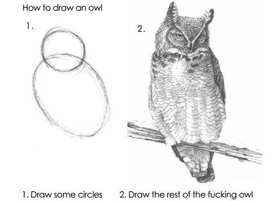

An idea is not cool stuff.
“Go to Subway with an idea and see if they will give you a sandwich.”- Jason Fried
The magic is not the idea.
It is what you are doing with it.
Notes for a presentation by John Polacek
Slides are here
An idea is not cool stuff.
“Go to Subway with an idea and see if they will give you a sandwich.”- Jason Fried
The magic is not the idea.
It is what you are doing with it.
$49.90 - Tiny 2.4GHz Rechargeable 6 AXES GYRO RC Somersault UFO
toys.brando.com
Also:

3D Printer Creates Copies of Your Live Fetus
3D Printed Houses Might be Closer Than You Thought
$1749 - Makerbot Replicator
$799 - Printrbot
Scratch - A programming language that makes it easy to create interactive stories, animations, games, music, and art -- then share your creations on the web.
littlebits - An opensource library of electronic modules that snap together with tiny magnets for prototyping and play.
There’s also these crazy things I’ve been hearing about lately called Legos.
Check this guy out. He’s doing the entire 4-year MIT curriculum for computer science via their OpenCourseware in one year.
It’s a goddamn hover bike.
At the start of each year, I write down a list of things I want to accomplish, usually things I want to learn and projects I want to do. For 2012, I made a simple goal, Do Cool Stuff.
I got an early start when my second son, Grant, was born on December 6th. Thanks to Draftfcb’s generosity, I had the entire month of December off. Now, having 2 kids is a handful, but thanks to visiting relatives and nap times, there would be some downtime available to me for coding.
After having some conversations about Responsive Web Design a few times around the office, I decided that I wanted to create a presentation on the topic. In addition, I had been thinking about an idea for creating online presentations, something like deck.js crossed with Nike Better World.
The end result would be What The Heck Is Responsive Web Design?. To get there, I first had to create scrolldeck.js. And for that to work, I needed to make Scrollorama, a jQuery plugin to do scroll animations.
On January 1st, I posted the Scrollorama plugin to Hacker News. It was my first post. My expectations were not high. I turned on the Bears game, and then didn’t think about it for awhile. When I did check back, Scrollorama was #1. I couldn’t believe it. Next thing I knew, it was getting picked up by dev blogs and podcasts. As a JavaScript Show listener, it was really cool to hear them talk about it, and laugh at the ridiculousness of the demo page. It is crazy, but I’ve seen my What The Heck Is Responsive Web Design? come up as high as #3 in the Google search results for Responsive Web Design.
In the time since, I’ve continued on my ‘Do Cool Stuff’ mission. While I was at SXSW Interactive, I created a funny little quiz game called Are You A Brogrammer? I released a sequel, Scrollorama2: SuperScrollorama. I’ve started up a company github group where we’ll be releasing open source projects from time to time, the first of which was BigVideo.js.
Building stuff that I think is cool has been tremendously fulfilling for me. Getting some notoriety and feedback has been great. It has resulted in great opportunities for me, like going to SXSW Interactive, Techweek Chicago and getting the opportunity to speak at Prototype Camp.
I think the best thing though has got to be seeing my code pop up in all these sites across the web. There’s this one and that one. Ones in other countries, like on The Black Sparrow, a restaurant website in New Zealand. Websites where I don’t speak the language, like Land Een Job!. Even awwward-winners like UK Copywriting company Rule of Three.
Q: How Do I Learn ____?
A: Just Build Stuff.

A Challenge Domain is a method of motivating research or development in a field of study through the use of an interesting or uniquely appealing challenge that inspires the imagination. (e.g. The Moon Landing or Robot Soccer)
“The key to being a good developer is to be really good at Google.”- Abraham Lincoln
Having a focus allows you to filter your ideas, and set your priorities to building the ideas that will excite you the most. After working on a few projects, you might want to change your focus, and that’s just fine.
My focus? Projects that are fun, and a little silly.